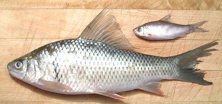
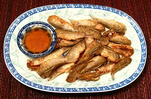

Dace / Mud Carp

[Cirrhinus molitorella (Asia)
- similar but not commercial, Leuciscus leuciscus (Europe)]
A common fish in fast moving fresh (or sometimes brackish) waters with a
worldwide distribution in temperate climates. Dace is commonly catagorized
as a "course" fish and not used much for food in the U.S. or Europe, but
is quite popular in Asia for making fish balls.
The photo specimen was 11-3/4 inches long and weighed 10-1/4 ounces,
fairly typical. Some markets also have trays of small dace. The photo
specimen was 4-1/2 inches long and weighed 5/8 ounce, but the tray
contained fish from 1/4 ounce to 1-3/8 ounces. In Cambodia small dace are
used to make prahoc, a pungent fermented fish condiment. See below for my
method of using them.
More on Carp Family.
Dace yields white flesh of good flavor, but it's quite a chore to eat
since the flesh, as with all carp, is shot full of annoying spines. Because
this is such a small fish compared to regular carp, dealing with all those
spines is a lot of trouble for not too much reward.
So why do Asian fish markets have bins of frozen Dace, a nearly
inedible fish? Well, because, as with the inedible Featherback, it's
considered a prize fish for making fish balls.
Buying:
This fish can be found in fish markets serving a
Southeast Asian or Chinese community. Most often it will be found in the
frozen fish cases, but sometimes it's displayed on ice.
Scales:
Like other carp, this fish is completely covered
with large scales with fairly good adhesion. They aren't all that hard to
scrape off, but they will fly around a bit.
Cleaning:
Nothing unusual here, except the gills will
break up if you try to pull them. Better to get them out when you're
breaking up the head to make stock.
Fillet:
Not a difficult fish to fillet. Remove the head.
Cut down to the backbone from the front, then over the backbone at the
tail end, freeing the fillet forward until you get to the rib cage. At
this point cut the ribs from the backbone with kitchen shears. The ribs
are substantial, but pull from the fillet very easily taking almost no
flesh. As for the tiny spines, forget it. They're in the flesh hard,
they're branched, and most are too weak to pull out whole.
Yield:
A 10-1/4 ounce fish yielded 5-3/4 ounces of skin-on
fillet (56%) and 5-1/4 ounces skinned (51%). This good yield is because the
head is very small.
Cooking:
Traditionally, skin-on fillets are scraped off
the flesh and the skins discarded. I find it easier to skin the fillets
using the long knife and cutting board method. The flesh is then chopped
fairly fine and processed into tasty fish balls.
Stock:
The heads, bones and fins, simmered slowly for 1/2
hour, make a mild and quite serviceable stock with little oil (what there
is should be removed using your gravy separator).

After taking my photo, I had a tray of tiny carp. What to do with them?. I
certainly wasn't about to make stinky prahoc, especially with so few fish.
I cut off the heads and gutted them, rinsing them out well. I pinched
off the exposed part of backbone (about 1/2 inch), which took most of the
exposed ribs with it. I did not scale them - I just deep fried them in
some olive pomace oil to a nice medium brown, then drained on paper towels.
I made up a dipping sauce from rice vinegar and a little fish sauce. This
worked very well and I wouldn't hesitate to serve them this way as an
appetizer.
sf_dacez* 060110 r 110306 - www.clovegarden.com
©Andrew Grygus - agryg@clovegarden.com - Photos
on this page not otherwise credited © cg1
- Linking to and non-commercial use of this page permitted